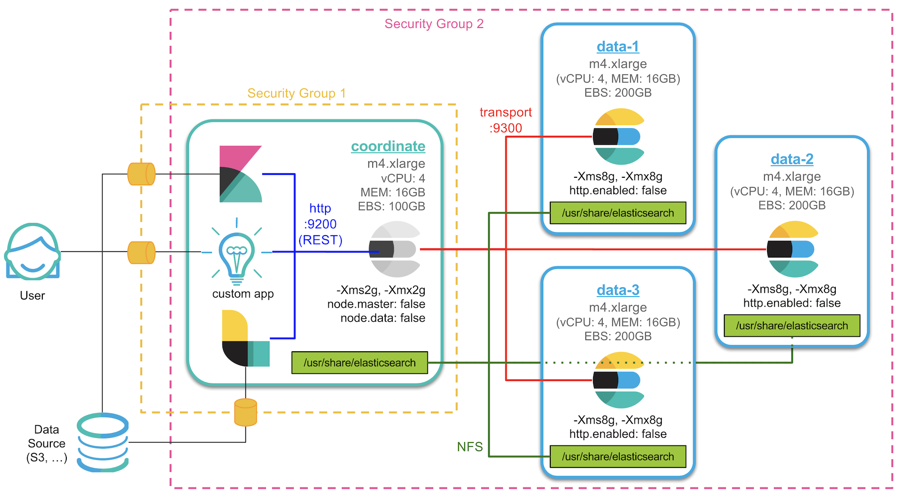
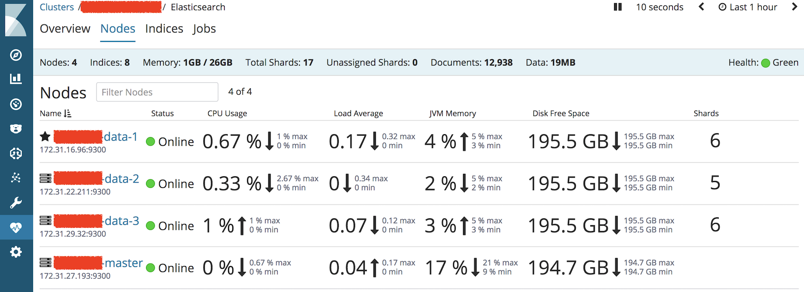

원래 이번 포스트에서는 X-Pack Security를 다루려고 했으나 몇가지 구성을 먼저 추가하려고 합니다. 우선 NFS(Network File System)을 설정해서 모든 서버의 /usr/share/elasticsearch 디렉토리를 동기화 시키고 업그레이드나 플러그인 설치 등을 한번에 할 수 있도록 하겠습니다.
참고로 NFS 설정은 잘못하다가 설정이 꼬여버릴 수 있으니 주의하시고 설정을 원하지 않으면 다음 포스트로 넘어가시기 바랍니다.
(저도 설정 하다가 네트워크 디렉토리 퍼미션 설정 등 몇가지가 꼬여서 싹 밀고 처음부터 새로 설치했습니다.) 🤯
이전 또는 이후 내용들은 아래 포스트에서 확인하세요.
1. 서버 생성 및 Elasticsearch RPM 설치
2. 메모리, 네트워크 설정 및 플러그인 설치
3. 클러스터 구성 및 마스터, 데이터 노드 설정
4. Kibana 설치 및 X-Pack Monitoring 확인
5. NFS 구성 및 elasticsearch 추가 설정
6. X-Pack Security를 이용한 SSL 및 TLS 설정
7. X-Pack License 적용 및 사용자 생성
8. Logstash 설치 및 Elasticsearch 기본 템플릿 설정
덧붙여 새벽에 페이스북에 달린 질문을 보고 잠시 고민이 되었습니다. 그리고 구성을 다음과 같이 데이터 노드 3개(마스터 겸임)와 코디네이트 노드(데이터를 저장하지 않고 애플리케이션과 통신만 담당하는, 클라이언트 노드 라고 부르기도 합니다) 노드로 바꾸기로 결정했습니다. 새로운 아키텍쳐의 구성은 다음과 같습니다.

- 데이터노드 1~3개 중 임의의 노드 하나가 마스터 노드를 겸하게 됩니다.
- 기존 마스터 노드는 코디네이트 노드로 Kibana 및 다른 애플리케이션과의 통신만 처리하게 됩니다.
- 코디네이트 노드는 다른 애플리케이션과 REST API를 사용합니다.(9200 포트)
- 코디네이트 노드와 데이터 노드들은 transport 프로토콜(9300 포트)로 데이터를 교환합니다.
- 데이터 노드들은 REST API를 사용하지 않도록 설정합니다.
http.enabled: false - 코디네이트 노드 서버의
/usr/share/elasticsearch디렉토리를 데이터 노드와 공유합니다. - 보안그룹 1은 코디네이트 노드 서버에만 적용 되며 허가된 포트로만 외부 클라이언트와 통신이 가능합니다.
- 보안그룹 2는 모든 서버에 적용되며 이 그룹 안의 서버들 끼리는 자유롭게 통신이 가능합니다.
NFS 설정
NFS 설정은 다음 포스트를 참고했습니다.
https://www.digitalocean.com/community/tutorials/how-to-set-up-an-nfs-mount-on-centos-6
편의상 코디네이트 노드를 서버, 데이터 노드 3대를 클라이언트 라고 표현 하겠습니다. 서버의 주소는 192.168.0.10, 클라이언트의 주소는 각각 192.168.0.11,192.168.0.12,192.168.0.13 이라고 가정 하겠습니다.
우선 저희 Amazon linux 서버에는 nfs-utils,nfs-utils-lib 가 이미 설치 되어 있습니다. 설치되어 있지 않다면 위 포스트를 참고해서 설치하시면 됩니다.
4개의 모든 서버에서 먼저 elasticsearch 서비스를 중지합니다.sudo service elasticsearch stop
/usr/share/elasticsearch 공유 설정
먼저 elasticsearch 프로그램들이 들어있는 /usr/share/elasticsearch 디렉토리 공유를 설정하겠습니다. 공유를 하는 목적은 업그레이드나 플러그인 설치 등을 각 서버별로 하지 않고 한번에 적용할 수 있도록 하기 위함입니다.
서버
서버에서 /etc/exports 파일을 열고sudo vim /etc/exports
아래 내용을 추가합니다./usr/share/elasticsearch 192.168.0.11(rw,sync,no_root_squash,no_subtree_check)
/usr/share/elasticsearch 192.168.0.12(rw,sync,no_root_squash,no_subtree_check)
/usr/share/elasticsearch 192.168.0.13(rw,sync,no_root_squash,no_subtree_check)
그리고 설정을 적용 해 줍니다.sudo exportfs -a
클라이언트
이제 클라이언트를 설정합니다. 3개 시스템에 모두 적용 해 줘야 합니다.
먼저 기존의 /usr/share/elasticsearch 를 삭제하고 빈 디렉토리로 다시 만듭니다.sudo rm -rf /usr/share/elasticsearch
sudo mkdir /usr/share/elasticsearch
그리고 나서 서버의 네트워크 디렉토리를 마운트 해 줍니다.sudo mount 192.168.0.10:/usr/share/elasticsearch /usr/share/elasticsearch
시스템 재시작 후에도 공유 디렉토리가 유지되도록 /etc/fstab 파일에 다음 내용을 추가합니다.sudo vim /etc/fstab
192.168.0.10:/usr/share/elasticsearch /usr/share/elasticsearch nfs auto,noatime,nolock,bg,nfsvers=3,intr,tcp,actimeo=1800 0 0
/etc/elasticsearch 공유 설정
다음은 config 파일들이 들어있는 /etc/elasticsearch 디렉토리 공유를 설정하겠습니다. config 파일들은 코디네이터 노드와 데이터 노드들이 구분되어야 하기 때문에 데이터 노드들은 서버에 /etc/elasticsearch-data 라는 디렉토리를 새로 만들어 이 디렉토리와 공유되도록 하겠습니다.
서버
먼저 서버에서 기존 /etc/elasticsearch 디렉토리를 권한 그대로 /etc/elasticsearch-data로 복사합니다.sudo cp -pr /etc/elasticsearch /etc/elasticsearch-data
다시 /etc/exports 파일을 열고sudo vim /etc/exports
아래 내용을 추가합니다./etc/elasticsearch-data 192.168.0.11(rw,sync,no_root_squash,no_subtree_check)
/etc/elasticsearch-data 192.168.0.12(rw,sync,no_root_squash,no_subtree_check)
/etc/elasticsearch-data 192.168.0.13(rw,sync,no_root_squash,no_subtree_check)
그리고 설정을 실행 해 줍니다.sudo exportfs -a
클라이언트
다시 클라이언트로(3개 모두 실행해야 합니다) 가서 기존의 /etc/elasticsearch 에 있는 파일들을 모두 삭제 해 줍니다. 루트 권한으로 들어가서 삭제 하는 것이 편합니다.sudo su
cd /etc/elasticsearch
rm -rf ./*
exit
서버의 /etc/elasticsearch-data 네트워크 디렉토리를 클라이언트의 /etc/elasticsearch로 마운트 해 줍니다.sudo mount 192.168.0.10:/etc/elasticsearch-data /etc/elasticsearch
시스템 재시작 후에도 NFS가 유지되도록 /etc/fstab 파일에 다음 내용을 추가합니다.sudo vim /etc/fstab
192.168.0.10:/etc/elasticsearch-data /etc/elasticsearch nfs auto,noatime,nolock,bg,nfsvers=3,intr,tcp,actimeo=1800 0 0
만약 재시작 후 데이터 노드에서 오류가 나면 기존 데이터 디렉토리를 삭제해야 합니다.
아직 운영 데이터는 없기를 바랍니다.
그리고 혹시 클라이언트에 X-Pack 같은 플러그인 설정 파일들이 없다면 서버의 마스터 설정 디렉토리
/etc/elasticsearch에서 데이터 설정 디렉토리/etc/elasticsearch-data로 복사 해줘야 합니다.
sudo cp -rp /etc/elasticsearch/x-pack /etc/elasticsearch-data/x-pack파일 접근 권한 때문에 데이터 노드들이 실행이 안 될수 있습니다. 데이터 노드들의 그룹 권한을 아래와 같이 elasticsearch로 설정 해 주어야 합니다.
elasticsearch 재설정
이제 이전 포스트들을 참고 해서 /etc/elasticsearch,/etc/elasticsearch-data 안에 있는 설정 파일들을 데이터 노드 설정에 맞게 바꾸도록 합니다. 기존에 마스터 노드였던 노드는 코디네이터 노드로 다시 변경하겠습니다. 이후 모든 명령은 코디네이터 노드에서 실행 해 줍니다.
Coordinate (Client) Node
먼저 코디네이트 노드의 메모리는 기존에 4GB 에서 2GB로 줄이도록 하겠습니다. 데이터 노드는 8GB 그대로 둡니다.[ ]$ sudo vim /etc/elasticsearch/jvm.options
-Xms2g
-Xmx2g
이제 코디네이트 노드의 elasticsearch.yml 설정을 변경합니다.sudo vim /etc/elasticsearch/elasticsearch.yml
마스터 노드가 코디네이트 노드로 바뀌었기 때문에 unicast 설정도 데이터노드 3개의 아이피를 넣어줍니다. 코디네이트 노드와 데이터 노드 설정 파일 모두 적용해야 합니다.discovery.zen.ping.unicast.hosts:
- 192.168.0.11
- 192.168.0.12
- 192.168.0.13
다음은 코디네이트 노드의 마스터와 데이터 설정을 모두 비활성화 시킵니다.node.master: false
node.data: false
Data Node
데이터 노드의 elasticsearch.yml 설정을 변경합니다. 코디네이트 노드가 있는 서버에서 공유 디렉토리에 있는 설정 파일을 편집하면 됩니다.sudo vim /etc/elasticsearch-data/elasticsearch.yml
코디네이트 노드와 마찬가지로 unicast 설정을 데이터노드 3개의 아이피로 변경합니다.discovery.zen.ping.unicast.hosts:
- 192.168.0.11
- 192.168.0.12
- 192.168.0.13
기존의 node.master: false 부분은 삭제합니다.
마지막으로 데이터 노드들은 REST API를 사용하지 않도록 http 포트를 비활성화 시킵니다.http.enabled: false
이제 모든 설정이 끝났으면 서버들을 재시작 합니다. 개인적인 경험인데 한꺼번에 동시에 재시작 하니까 데이터노드 하나가 클러스터에 안 붙는 경우가 있었는데 그 서버만 다시 재시작 하면 정상적으로 붙습니다.
X-Pack 모니터링 화면에서 확인 해 보면 이번에는 데이터 노드 중 하나가 마스터를 겸하고 있고 기존의 마스터 노드는 계속 데이터를 저장하지 않는 코디네이트 노드로 남은 것을 확인할 수 있습니다.

이제 네트워크 파일 설정이 끝났으니 앞으로 환경 설정을 변경하거나 업그레이드, 패치 등을 할 때도 데이터 노드 서버에 접속할 일 없이 코디네이트 노드 서버에서 모든 것을 할 수 있게 되었습니다.
다음편에는 진짜로 X-Pack Security 설정을 다루도록 하겠습니다.
1. 서버 생성 및 Elasticsearch RPM 설치
2. 메모리, 네트워크 설정 및 플러그인 설치
3. 클러스터 구성 및 마스터, 데이터 노드 설정
4. Kibana 설치 및 X-Pack Monitoring 확인
5. NFS 구성 및 elasticsearch 추가 설정
6. X-Pack Security를 이용한 SSL 및 TLS 설정
7. X-Pack License 적용 및 사용자 생성
8. Logstash 설치 및 Elasticsearch 기본 템플릿 설정